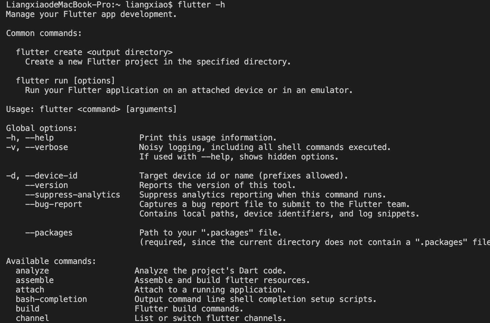
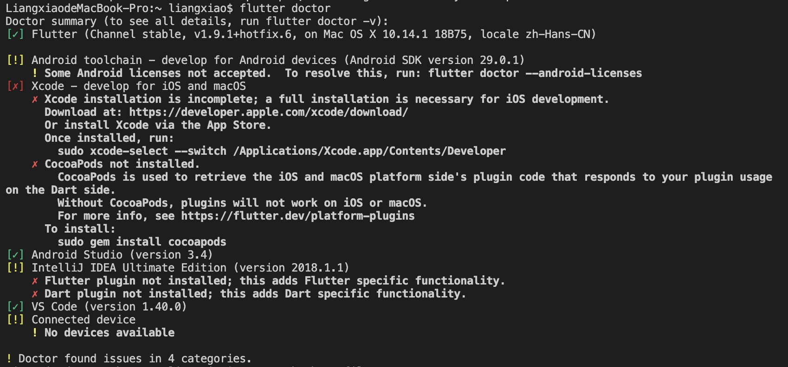
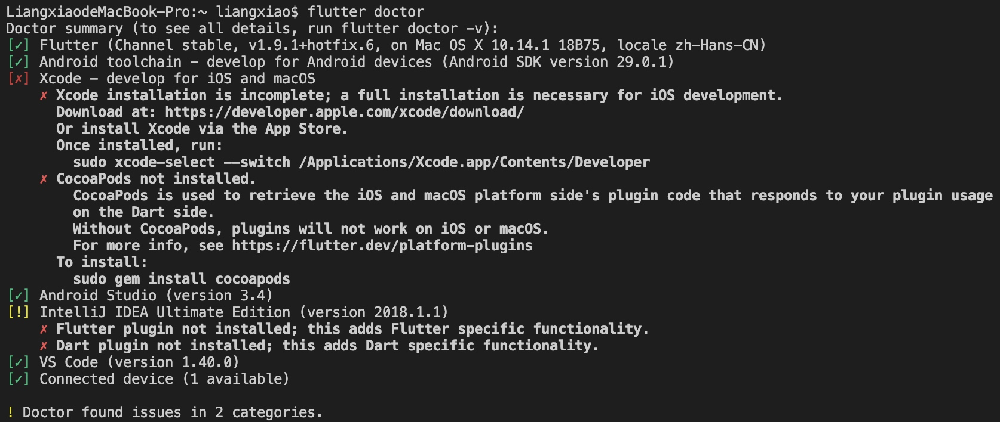

作为移动端开发者，虽然算不上是前端开发者，但是大前端是趋势，也有必要去了解一些跨平台框架，为未来做一点技术储备。Flutter 是 Google 推出的跨平台框架，之前在 Android Studio 上创建过新项目，比较方便，下载 Flutter & Dart 插件，下载 Flutter SDK，没有遇到太大的环境搭建上的问题。想学习一下 VSCode 上 Flutter 如何开发，加之是 MAC 电脑，配置环境变量搞了大半天。写篇笔记，做个记录。
Flutter SDK
国内下载 Flutter SDK 需要科学上网，这点困难大家自己克服，如果不能科学上网，国内镜像应该也可以下载到。下载后，新建目录，解压 SDK，这个目录地址，是后面配置需要的，大家需要记住。
还需要下载代码编辑器 VSCode,因为我的电脑之前已经下载了 VSCode，这部分就省略了。
安装 Flutter 插件
打开 VSCode，点击左边类似俄罗斯方块的图标，搜索 Flutter,点击安装，这个插件会直接安装 Flutter,Dart 开发环境。为了能在 VSCode 里面使用命令行，我们需要配置环境变量，之前在 Android Studio 中，创建 Flutter 应用只需要下载配置 Flutter SDK,安装 Flutter & Dart 插件即可，不需要配置环境变量。在 VSCode 配置全局环境变量时，浪费了很多时间，网上很多文章也没有写到点，特此记录。
配置环境变量
1 | //打开配置文件 |
可以直接使用上面的命令去配置，如果觉得不直观，也可以使用文本编辑器来配置，步骤如下：配置完记的保存。
1 | open ~/.bash_profile |
配置完上面的这两个步骤，我以为就 OK 了，然后使用 flutter -h 命令去检查，直接打脸 bash: flutter: command not found
才发现自己少了一个步骤，命令如下：1
source ~/.bash_profile
执行完这个命令后，再次使用 flutter -h 命令去检查，终于显示 Flutter 命令帮助，配置成功了。

检查环境
执行命令：1
flutter doctor

可以看到图片上有对勾，有叉号，有感叹号，分别代表什么意思呢？首先有[!] ✗ 标志，表示本行检测不通过，需要做一些设置或者安装一些软件。
比如：1
2[!] Android toolchain - develop for Android devices (Android SDK 29.0.1)
! Some Android licenses not accepted. To resolve this, run: flutter doctor --android-licens
执行提示命令：
1 | flutter doctor --android-licenses |
然后无脑一路输入 y 就 OK 了。
再次输入 flutter doctor检查，之前[!]的第二项，现在是对勾了。可以进行 Android 开发了。
